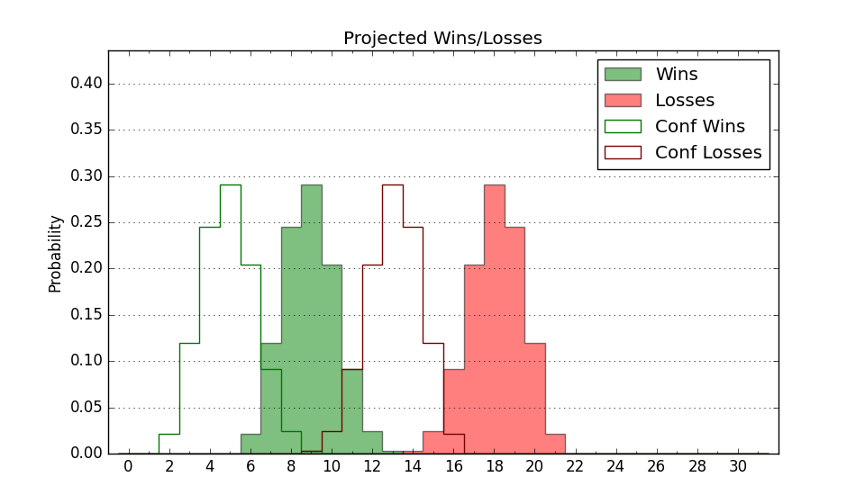

| Home | Game Probabilities | Conferences | Preseason Predictions | Odds Charts | NCAA Tournament |
| City: | Atlanta, Georgia | |
| Conference: | Sun Belt (13th)
| |
| Record: | 2-8 (Conf) 6-13 (Overall) | |
| Ratings: | Comp.: -8.6 (265th) Net: -8.8 (267th) Off: 92.6 (332nd) Def: 101.5 (162nd) SoR: 0.0 (166th) |
| Remaining | ||||||
|---|---|---|---|---|---|---|
| Date | Opponent | Win Prob | Pred. | |||
| 2/2 | Georgia Southern (226) | 56.7% | W 64-63 | |||
| 2/4 | Southern Miss (89) | 24.9% | L 62-70 | |||
| 2/9 | Old Dominion (167) | 43.3% | L 62-64 | |||
| 2/11 | Marshall (83) | 22.9% | L 66-75 | |||
| 2/16 | @ Coastal Carolina (288) | 39.3% | L 66-69 | |||
| 2/18 | @ Arkansas St. (324) | 49.1% | L 61-62 | |||
| 2/22 | Appalachian St. (193) | 47.4% | L 62-63 | |||
| 2/24 | @ James Madison (84) | 8.1% | L 59-77 | |||
| Previous | Game Score | |||||
| Date | Opponent | Win Prob | Result | Off | Def | Net |
| 11/12 | Georgia Tech (202) | 49.5% | L 57-59 | -11.1 | 5.3 | -5.8 |
| 11/15 | Mercer (218) | 55.2% | W 85-83 | 9.5 | -6.6 | 2.9 |
| 11/18 | Eastern Kentucky (195) | 47.7% | L 61-62 | -1.9 | 2.5 | 0.7 |
| 11/19 | Texas A&M Commerce (301) | 72.1% | W 57-53 | -8.0 | 1.4 | -6.6 |
| 11/20 | UNC Asheville (165) | 43.0% | W 74-68 | 6.1 | 3.1 | 9.2 |
| 11/27 | Belmont (126) | 34.5% | L 66-68 | 0.8 | -1.7 | -0.8 |
| 12/4 | @Northeastern (274) | 36.5% | L 46-66 | -26.0 | 1.1 | -25.0 |
| 12/14 | @Auburn (37) | 4.2% | L 64-72 | 15.7 | 1.7 | 17.4 |
| 12/18 | Rhode Island (244) | 60.8% | W 75-66 | 13.0 | -3.0 | 10.0 |
| 12/29 | James Madison (84) | 23.0% | L 47-63 | -23.3 | 8.5 | -14.8 |
| 12/31 | South Alabama (185) | 46.2% | W 68-58 | 11.3 | 14.4 | 25.7 |
| 1/5 | @Louisiana Monroe (282) | 37.7% | L 58-66 | -3.4 | -2.8 | -6.1 |
| 1/7 | @Louisiana Lafayette (122) | 12.9% | L 70-78 | 14.3 | -4.1 | 10.2 |
| 1/12 | Troy (154) | 40.6% | L 53-65 | -19.1 | 3.9 | -15.2 |
| 1/14 | Coastal Carolina (288) | 68.8% | W 100-66 | 39.5 | -2.5 | 37.0 |
| 1/19 | @Old Dominion (167) | 18.3% | L 58-70 | -3.8 | -2.9 | -6.7 |
| 1/21 | @Georgia Southern (226) | 27.8% | L 52-58 | -16.6 | 14.7 | -1.9 |
| 1/26 | @Appalachian St. (193) | 20.9% | L 59-71 | 6.1 | -14.5 | -8.3 |
| 1/28 | @Marshall (83) | 8.0% | L 65-103 | -5.2 | -14.0 | -19.2 |
| Stats & Trends | |||||
|---|---|---|---|---|---|
| Current | Day | Week | Month | Season | |
| Composite | -8.6 | -0.1 | -2.3 | -0.7 | -2.9 |
| Comp Rank | 265 | +1 | -27 | -3 | -32 |
| Net Efficiency | -8.8 | -0.1 | -2.4 | -0.1 | -- |
| Net Rank | 267 | -- | -29 | +3 | -- |
| Off Efficiency | 92.6 | +0.0 | -0.3 | +2.5 | -- |
| Off Rank | 332 | -- | -6 | +7 | -- |
| Def Efficiency | 101.5 | -0.1 | -2.1 | -2.6 | -- |
| Def Rank | 162 | -- | -33 | -24 | -- |
| SoS Rank | 241 | -3 | +50 | +62 | -- |
| Exp. Wins | 8.9 | -0.0 | -0.8 | -1.3 | -3.6 |
| Exp. Conf Wins | 4.9 | -0.0 | -0.8 | -1.3 | -3.5 |
| Conf Champ Prob | 0.0 | -- | -- | -0.0 | -5.2 |

| Advanced Stats | ||
|---|---|---|
| Stat | Value | Rank |
| Off Eff FG % | 0.450 | 338 |
| Off Ast Ratio | 0.111 | 351 |
| Off ORB% | 0.274 | 167 |
| Off TO Rate | 0.171 | 275 |
| Off FT Ratio | 0.334 | 121 |
| Def Eff FG % | 0.499 | 164 |
| Def Ast Ratio | 0.141 | 176 |
| Def ORB% | 0.277 | 225 |
| Def TO Rate | 0.164 | 132 |
| Def FT Ratio | 0.352 | 267 |